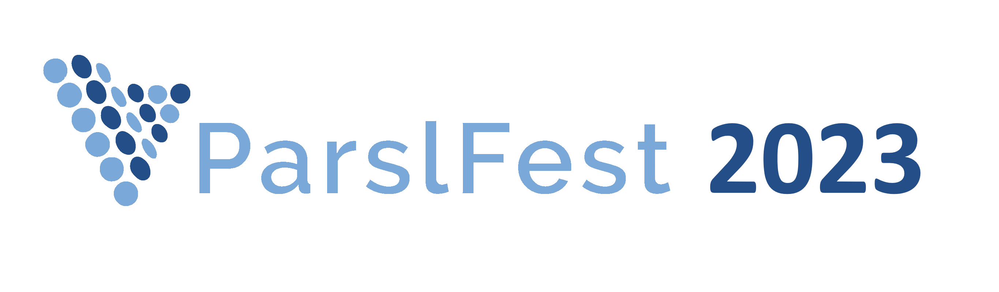
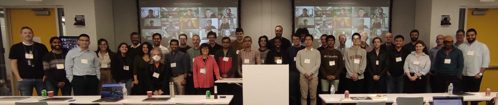
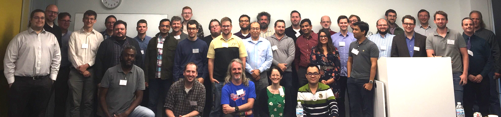

The fifth ParslFest Community Meeting was held as a hybrid meeting on October 19-20, 2023. It started around noon on the 19th, with talks that day, and on the morning of the 20th. The afternoon of the 20th was an open hacking session for hands-on work, hacking, testing, bring-your-own-code, etc. The in-person component was held at the University of Chicago.
The meeting brought together researchers, developers, and cyberinfrastructure experts from around the world to discuss experiences using and developing Parsl and Globus Compute (formerly funcX) - a federated function-as-a-service platform related to Parsl.
Attended ParslFest? Please take a few moments to complete our post-event feedback survey.

Contact us at parsl@googlegroups.com.
JCL 298
John Crerar Library
5730 S. Ellis Ave
Chicago, IL 60637
map
Parsl community meetings have brought together hundreds of researchers, developers, and cyberinfrastructure experts for meetings that included presentations and discussions.
The ParslFest 2019 page includes the agenda and all presentations (slides) from ParslFest 2019.
The ParslFest 2020 page includes the agenda and all presentations (slides and videos) from ParslFest 2020.
The Parsl & funcXFest 2021 page includes the agenda and all presentations (slides and videos) from Parsl & funcXFest 2021.
The Parsl & funcXFest 2022 page includes the agenda and all presentations (slides and videos) from Parsl & funcXFest 2022.
